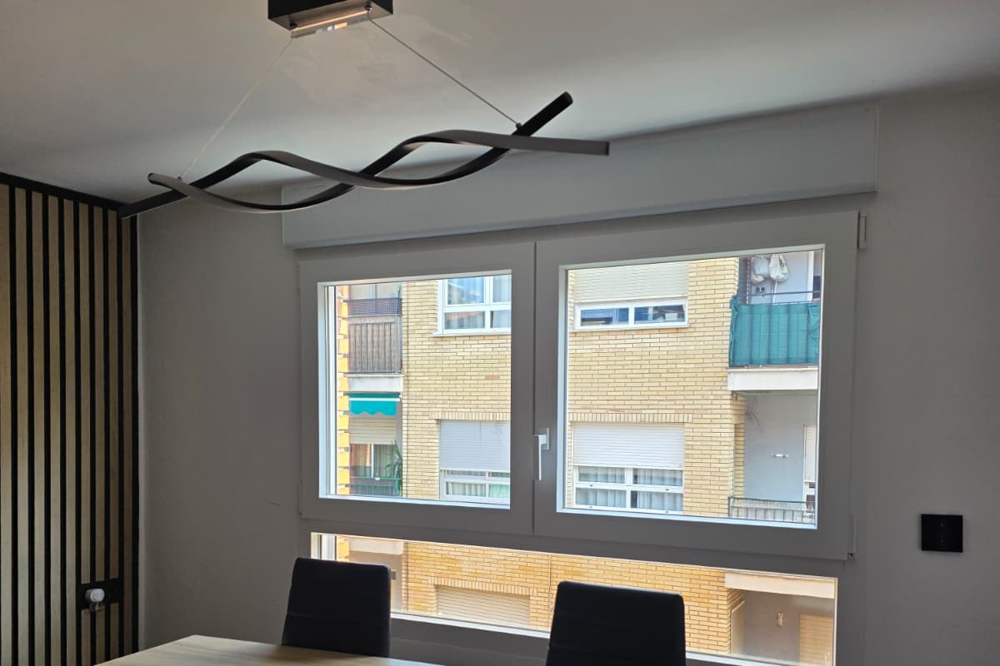

Ventanas que aíslan tu hogar del frío y reducen tu factura en Alcoy
Ventanas Bañuls es el taller fabricante e instalador de referencia en Carrer Murillo 41 (03802 Alcoi). Especialistas en carpintería de PVC multicámara y aluminio con rotura de puente térmico (RPT) con partners oficiales Cortizo, Roto y Strugal. Instalación limpia sin obras de albañilería en 24-48h, con hasta un 40% de deducción en IRPF y 10 años de garantía.
Elimina las condensaciones matinales, los cristales empañados y las corrientes de aire. Disfruta de un hogar cálido y silencioso en invierno con carpinterías fabricadas a la medida exacta de tus huecos.

¿Tus ventanas actuales sufren el invierno de Alcoy?
A 600 metros de altitud, el frío de la Mariola y la humedad causan estragos en las viviendas con carpinterías obsoletas:
Facturas de calefacción disparadas
El 40% del calor que pagas en radiadores, estufas o bomba de calor se escapa directamente por perfiles de aluminio frío sin rotura y cristales simples.
Condensación y moho en paredes
Ese charco de agua matutino en el alféizar no es normal: es el contraste térmico que pudre persianas, genera hongos nocivos para la salud y mancha las paredes.
Ruido de tráfico y corrientes de aire
Juntas de goma resecas por el paso del tiempo que permiten el silbido del viento norte y el ruido de vehículos día y noche en tu salón y dormitorio.
La Solución Bañuls: Tecnología Cortizo, Roto y Strugal
Fabricamos e instalamos cerramientos que convierten tu casa en un refugio hermético, cálido y silencioso.
-
PVC de Alta Eficiencia Cortizo: Perfiles multicámara con máxima resistencia térmica y nulo mantenimiento.
-
Aluminio con RPT Strugal & Cortizo: Máxima entrada de luz con perfiles esbeltos y poliamidas aislantes.
-
Herrajes de Seguridad Roto Frank: Cierre hermético perimetral antipalanca con maniobra oscilobatiente suave.
-
Montaje Limpio sin Escombros: Nos adaptamos a tus huecos existentes respetando suelos y molduras en 1 día.


| Característica Técnica | Especificación Bañuls | Beneficio Real para tu Vivienda |
|---|---|---|
| Transmitancia Térmica ($U_w$) | Desde 0.9 a 1.2 $WW/m²K | Reduce la pérdida de calor hasta un 55% en los meses gélidos de Alcoy. |
| Aislamiento Acústico | Vidrios acústicos hasta 42 dB | Silencio total: no escucharás el tráfico de la calle ni el viento. |
| Sistema de Cierre | Herrajes perimetrales Roto Frank | Presión constante en todo el marco para evitar cualquier infiltración de aire. |
| Vidrio Climalit Plus | Bajo emisivo con control solar y gas argón | Adiós definitivo a cristales empañados y charcos de condensación. |
| Deducción Fiscal | Certificación IDAE + Marcado CE oficial | Permite deducir hasta un 40% en IRPF en la Comunidad Valenciana. |
Vea el Funcionamiento y Ajuste Hermético en una Obra Real en Alcoy
En este vídeo grabado directamente en una vivienda reformada en Alcoy, comprobamos la suavidad de maniobra del herraje Strugal, el doble acristalamiento acústico Climalit y la eliminación inmediata del ruido de tráfico exterior.
-
Apertura y Cierre Oscilobatiente Suave: Maneta ergonómica oficial Strugal con puntos de cierre perimetrales de alta seguridad.
-
Aislamiento Acústico Instantáneo: Compruebe cómo al accionar la maneta, el sonido del tráfico y la calle se amortigua por completo.
-
Certificación y Sellado Térmico Bañuls: Carpintería a medida fabricada en Carrer Murillo 41 e instalada sin obras molestas.
La Transformación: Arrastra y comprueba el cambio
Compara una ventana antigua con pérdidas térmicas frente a la nueva instalación hermética de Bañuls con perfilería Cortizo y vidrio Climalit:
👆 Arrastra el control central o pulsa a los lados para revelar la transformación completa.
Calculadora de Ahorro Térmico en Alcoy
Descubre cuánto dinero ahorras al año en calefacción al cambiar tus ventanas:
* Estimación basada en los grados-día climáticos de la comarca de l'Alcoià y tarifas medias de energía.
Ahorro continuo en calefacción y climatización
Sustitución en 3 pasos: Fácil, rápido y sin molestias
Sin intermediarios ni subcontratas: nosotros fabricamos y nosotros instalamos.
Visita y Medición Gratuita
Un técnico de Bañuls acude a tu domicilio en Alcoy o comarca, toma medidas exactas al milímetro y analiza la orientación solar y el nivel de ruido.
Fabricación en Nuestro Taller
Fabricamos tus ventanas a medida en Carrer Murillo 41 con perfiles Cortizo y Strugal, herrajes Roto y vidrios Climalit bajo emisivos con gas argón.
Instalación Impecable en 1 Día
Retiramos las carpinterías antiguas, sellamos térmicamente las nuevas y dejamos tu vivienda limpia y lista para disfrutar del silencio y calor.
¿Por qué confiar en un taller local y no en grandes almacenes?
La diferencia entre una ventana estándar y una solución hecha a medida para el clima de Alcoy:
Ventanas Bañuls (Alcoy)
RECOMENDADO- ✔ 60+ años de presencia física en Carrer Murillo 41.
- ✔ Fabricación 100% a medida adaptada a las particularidades de tu hueco.
- ✔ Partners oficiales: Cortizo, herrajes Roto Frank y Strugal.
- ✔ Instaladores de plantilla propia con cuidado meticuloso de acabados.
- ✔ Gestión de documentación oficial para la deducción del IRPF (Comunidad Valenciana).
Grandes Almacenes de Bricolaje
- ✖ Medidas estándar que obligan a rellenar huecos con exceso de espuma.
- ✖ Subcontratas externas de montaje que cobran por rapidez y no por detalle.
- ✖ Atención posventa a través de números 902 o formularios impersonales.
- ✖ Herrajes básicos de baja durabilidad que fallan con el viento.
Preguntas Frecuentes sobre Ventanas en Alcoy
Resolvemos tus dudas sobre aislamiento, marcas y deducciones:
¿Qué es mejor para el frío de Alcoy: PVC o Aluminio con RPT?
¿Por qué trabajáis con herrajes alemanes Roto?
¿Cuánto tiempo dura la instalación y se mancha la casa?
¿Cómo puedo deducirme hasta el 40% en el IRPF?
¿Comprar ventanas en grandes superficies (Obramat / Leroy Merlin) o a medida en taller local?
En Ventanas Bañuls tomamos medidas con láser en tu vivienda y fabricamos cada ventana exactamente a medida en nuestro taller de Carrer Murillo 41 con perfiles oficiales Cortizo/Strugal y herrajes perimetrales alemanes Roto Frank. Realizamos la instalación en un solo día sin obras molestas, garantizamos un sellado hermético duradero y facilitamos las fichas técnicas CE selladas para que puedas desgravarte hasta el 40% en tu declaración de la renta (IRPF).
Opiniones Reales de Clientes en Google Business
Valoraciones verificadas en la ficha oficial de Ventanas Bañuls en Alcoy:
"Encargue unas 4 ventanas acusticas triple junta strugal. Todos hicieron un buen trabajo y atendieron mis problemas del ajuste final. Bastante contento por el momento, veremos con el tiempo como se asientan las ventanas y resisten el uso normal. Gracias por todo"
"Mi piso en Alcoy necesitaba nuevas ventanas y hemos contactado con Ventanas Bañuls y la verdad es que super contentos con su productos y ejecución. Siempre atentos al detalle de la instalación y los tiempos de entrega. El principal motivo de la sustitución de mis ventanas era el ruido, ya que vivió en una calle muy concurrida. Problema resuelto. 100% recomendables."
"La verdad es que hemos quedado muy contentos. Las ventanas muy bien, la instalación y obra perfectas, los plazos de realización cumplidos tal como habíamos acordado. Buen trabajo y asesoramiento de Jandro y sus compañeros."
Pide tu Presupuesto sin Compromiso
Te responderemos en menos de 24 horas con una estimación o para fijar tu visita gratuita en Alcoy:
Dónde Estamos
Visita nuestra exposición y taller en pleno centro residencial de Alcoy:
📍 Dirección: Carrer Murillo, 41, 03802 Alcoi, Alicante
📞 Teléfono: 601 28 13 13
✉️ Email: Jandrobleal@gmail.com
🕒 Horario: Lunes a Viernes de 9:00 a 14:00 y de 16:30 a 20:00.